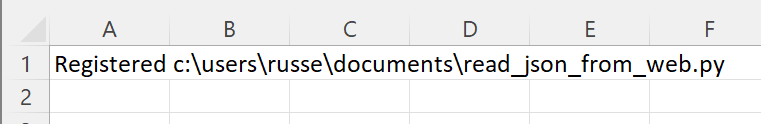
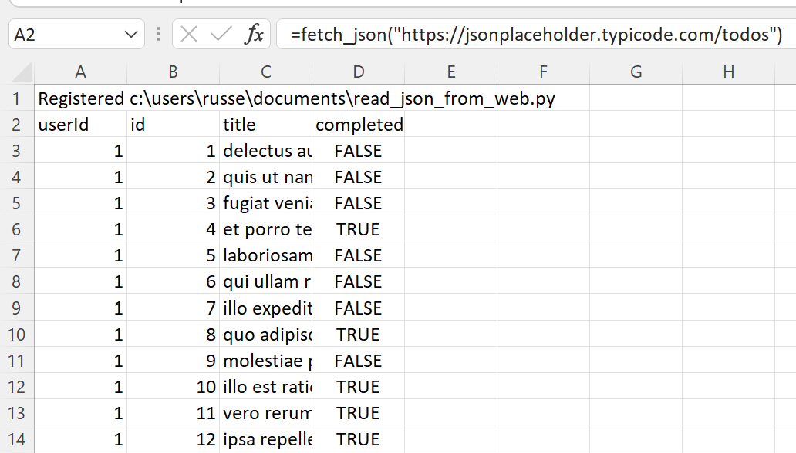

Read JSON data from a URL¶
A common task is fetching data from websites. This data is commonly available as JSON data. Excel can fetch JSON data itself, however often you will want to do further processing of the data before use in Excel. You may also only want to write the retrieval code once and use it within Excel and your other Python projects.
Let’s say we want to download the data at json_sample_data
We will use this Python code to download the data:
# Fetch JSON data from a web site
import urllib.request
import json
def fetch_json(url):
"""GET data from the url and assume the response is JSON."""
with urllib.request.urlopen(url) as response:
data = json.loads(response.read())
columns = ["userId", "id", "title", "completed"]
result = [columns]
for d in data:
result.append([d[c] for c in columns])
return result
if __name__ == "__main__":
print(fetch_json("https://jsonplaceholder.typicode.com/todos"))
Note
All the Python code and Excel files shown are available from github in the xlslim-code-samples repo.
Save the Python code as a new file on your PC. I saved the file in my Documents folder.
Open Excel and enter this RegisterPyModule() formula (amending the location to match where you saved the file):
=RegisterPyModule("c:\users\russe\documents\read_json_from_web.py")
You should see a message similar to this confirming the module registration:
{kind=link}
The fetch_json() function is now available in Excel and can be called by entering this formula:
=fetch_json("https://jsonplaceholder.typicode.com/todos")
As easy as that! The data is now available in Excel.
{kind=link}